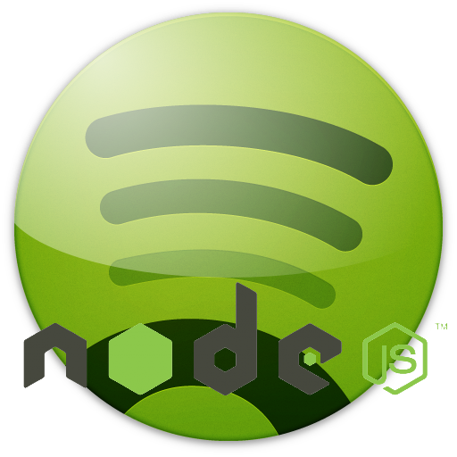

<div class="container">
    <div class="row">
        <hr />
        <div class="span8">
            <p>
                <strong>TODO: write something about node-libspotify in here</strong>
            </p>
            {% capture readme_content %}
                {% include readme.markdown %}
            {% endcapture %}
            {{ readme_content | markdownify }}
        </div>
        <div class="span2 offset2 ">
            
        </div>
    </div>
</iiv>
